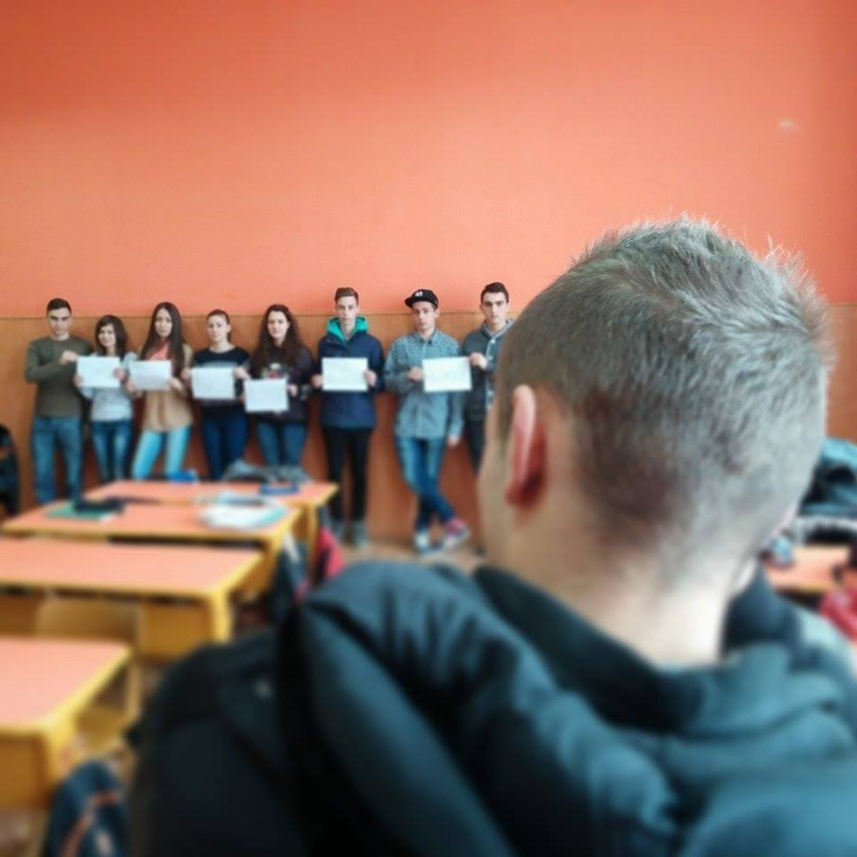
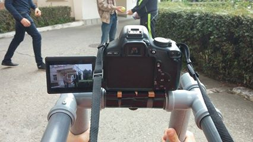

Alcoolismul are extrem de multe efecte atat asupra persoanei în cauză cât și asupra celor din jur, și vorbim de efecte ce țin de sfera psihologică dar și de efectele fizice. Cauza celor mai multe accidente, inclusiv cele de mașini, este abuzul de alcool. Un alt efect neplăcut al alcoolului este violența și agresivitatea. Elevii Colegiului Național "Aurel Vlaicu" au realizat un film despre efectele abuzului de alcool, trimițând și un mesaj sugestiv.
,,Alcoolul este unul dintre drogurile care în timp dă dependenţă. Este o substanţă care, consumată în cantităţi mari, este foarte dăunător organismului căruia îi poate cauza multe efecte negative precum: hepatita, cancerul, ciroza, atacul de cord, gastrita. Persoanele care consumă alcool în cantităţi foarte mari sunt predispuşi la depresie şi paranoia, pentru ca alcoolul încetineşte funcţionarea celulelor şi totodata a organelor şi poate provoca de asemenea şi coma. Am realizat acest film deoarece încurajăm evitarea consumului de alcool şi totodata susţinem alimentaţia sănătoasă şi un program de sport urmat cu regularitate.
|  |
În cadrul proiectului Comenius, elevii Colegiului National "Aurel Vlaicu" Orăștie au avut inițiativa de a realiza un scurt metraj pe tema proiectului. În lume există peste un miliard de persoane adulte supraponderale, obezitatea progresând și în rândul copiilor: în lume există 22 de milioane de copii obezi cu vârsta sub cinci ani. Obezitatea infantilă tinde să ia proporții alarmante în Uniunea Europeana, unde 14 milioane de copii sunt supraponderali și numărul acestora crește anual cu 400.000.
"Am ales să facem un film despre comportamentul alimentar deoarece observăm în jurul nostru tot mai mulți prieteni care încep să sufere de obezitate. Mi se pare o chestie foarte propice ca lumea să știe riscurile și consecințele acestei boli pentru a lua măsuri spre binele lor. Totul a debutat după ce un amic de-al nostru a început să aibă probleme grave de sănătate din cauza obezitatii. Atunci ne-am zis că trebuie să luăm măsuri și să oferim tinerilor, deoarece ei sunt viitorul, o alternativă pentru a renunța la un stil de viată nesănătos. Pentru mai multe detalii vă recomandăm să urmariti filmul." Jina Mihai-Radu, Cocoș Daniel.
|  |